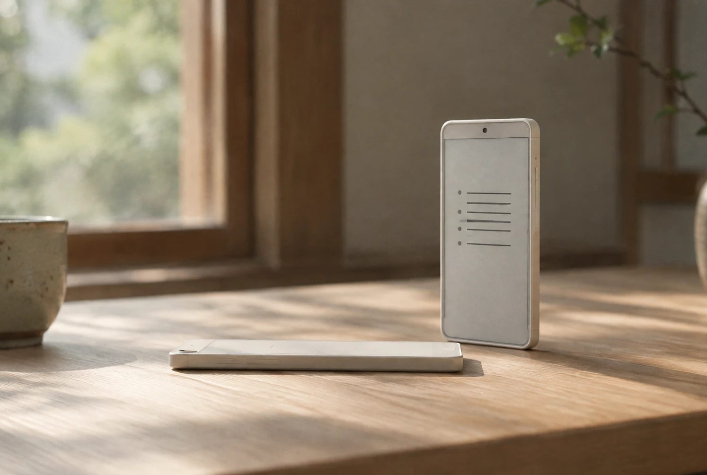

Digital Detox Phone
Step Out, Turn Off.
Joy lives outside the screen.
Pre-orders open
Free. No purchase or payment. We’ll only email you about the launch.
The problem
165min
The time people in Japan spend on their phones each day.
A record high.
Source: Hakuhodo, Media Teiten Survey 2025 (as reported)

Somewhere along the way,
I was spending most of my day on a screen.

Social media is fun. Games are fun.
That's why I couldn't stop.

It was morning, and then it was night.
I set limits, and turned them off every time.
What I really wanted was to go outside.
Soto Phone
Soto means
“outside” in Japanese.
No social media or games, the apps that keep you glued to the screen. And the time you put your phone down becomes points to spend outside.
A phone for heading outside the screen.

A day outside
A day outside the screen.


What's inside
Only what you need
to head outside.
Inside
- Calls
- SMS
- Maps
- Transit
- Weather
- Camera
- Music
- Emergency alerts
- Clock and alarms
- Notes and calendar
- Soto Points
Not inside
- Social media
- Games
- Video apps
- App store
- Browser
The screen stays black and white, and color returns only when you open your photos. Pay with your own cards. Support for transit IC cards (such as Suica) is under consideration.
Points
Time with your phone down
becomes time outside.
- 01Choose your time awayDinner, before bed, a weekend morning.
- 02Keep it, and earnCalls from family and maps don't break it. There's a daily cap.
- 03Spend it outsideUse your points at partner shops and experiences on the map.
Every place is picked by a pro in that field, like a fishing or mountain guide.
Hot springs, saunas, hiking, fishing, books, food.
Partners and rewards are still being prepared.
Trial
Live with Soto
for two weeks.
When the prototype is ready, a small group will use it for two weeks.
With their permission, we'll share what they felt here.
Letter
Why I'm building this.
I've never built a phone.
But I know what it's like to be controlled by one.
I'd look at my screen, and the day would be gone. I set limits to stop, and turned them off myself. Willpower didn't work.
I think a lot of people feel the same way. So I decided to build a phone that makes you want to go outside, without relying on willpower.
I can't build it alone. I'll share the road to launch honestly, right here. I'd be glad if you followed along.
Kazuma Sasaki, Founder, Soto Phone
Pre-order
Joy lives
outside the screen.
We'll tell you first when it launches.
Prototype trials will be announced here first, too.